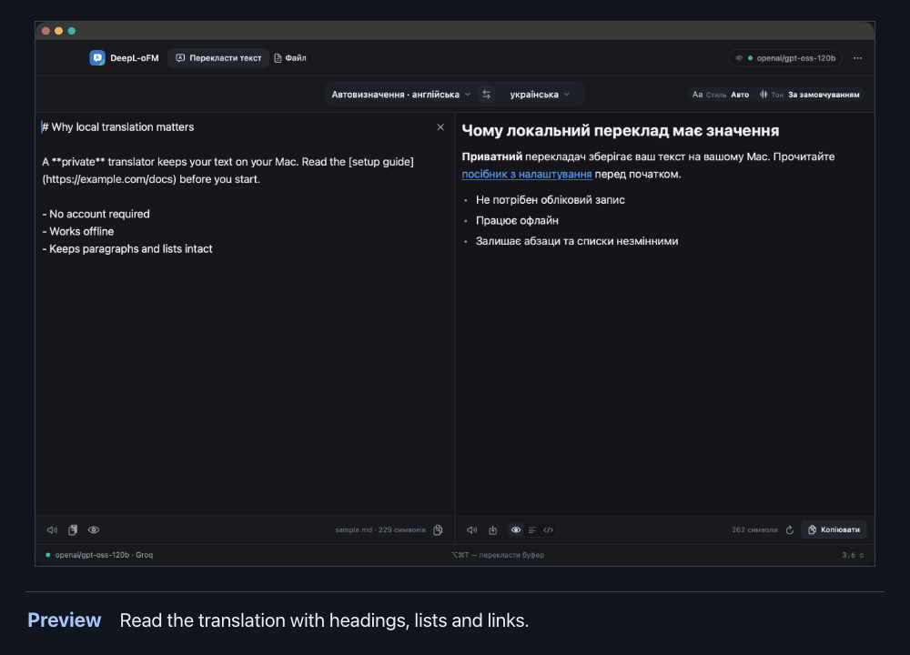

Get a translated copy of your file
Open a Word document or a PDF with selectable text. Save a translated copy that keeps the page layout.
Select text in an email, on a website or in a document and press ⌥⌘C. DeepL-oFM opens and starts translating right away.
Free to use. No app account or subscription. You can set it up to work without internet.
3.7 MB download · Mac with an Apple chip and macOS 14 or later.
Pick an example. The shortcut works in the Mac app.
Choose a language and copy the result back into your reply. You can also paste longer text straight into the app.

Open a Word document or a PDF with selectable text. Save a translated copy that keeps the page layout.
Set up offline translation once. After that, you can translate on your Mac and keep your text on the device.
Ask DeepL-oFM to fix mistakes or make a sentence clearer while keeping your meaning.
DeepL-oFM is an independent, free alternative for everyday translation. You get the familiar side-by-side view, plus the option to work offline. Use it with no DeepL account or subscription.

The first time you use ⌥⌘C, macOS asks you to allow DeepL-oFM to copy the selected text. Follow the prompt in System Settings.
For offline use, install Ollama and run these commands once to download what the app needs.
ollama pull maternion/hy-mt2:7b ollama cp maternion/hy-mt2:7b hy-mt2:7b
The iPhone app is in testing. A Windows version is in development.
Yes. The app is free and has no subscription. Offline translation is free once you set it up. If you connect an online service, that service may have its own limits or charges.
The app takes about 9 MB after installation. To translate without internet, you need a separate, larger download.
When you translate offline, your text stays on your Mac. If you use an online service, that service receives the text. The project does not collect your translations.
If you can select words in the PDF, you can translate it. For a scan where the words are part of an image, use text recognition first.
DeepL-oFM is an independent app. It has no affiliation with DeepL SE.